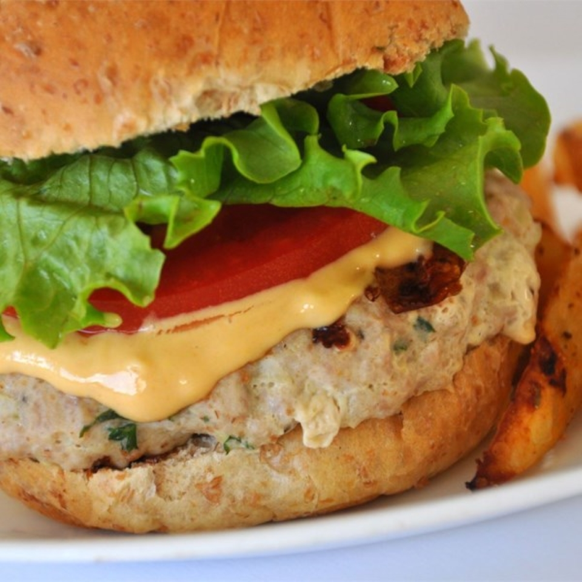

Turkey Turkey

Tasty and juicy turkey burgers
A tasty turkey burger recipe that comes together quickly. Great for grilling on the BBQ or seared in a pan.
This recipe makes 4 portions, but scale as you'd like.
Ingredients
- 1 lbs Ground Turkey
- 1 tablespoon seasoned bread crumbs
- 1 tablespoon diced onions
- 1 Egg white, lighlty beaten
- 1 tablespoon fresh parsely
- 1/2 clove garlic
- 1/2 teaspoon salt
- 1/2 teaspon black pepper
Directions
- In a large bowl, mix ground turkey, seasoned bread crumbs, onion, egg whites, parsley, garlic, salt, and pepper. Form into 12 patties.
- Cook the patties in a medium skillet over medium heat, turning once, to an internal temperature of 180 degrees F (85 degrees C).